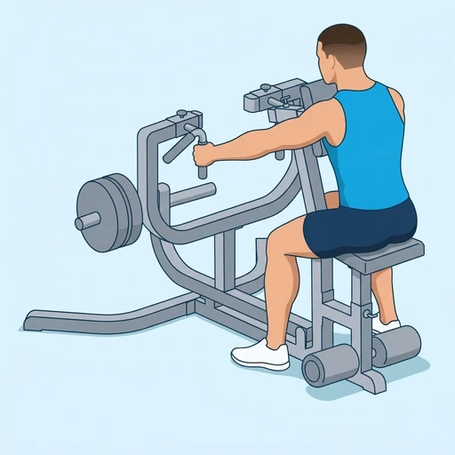
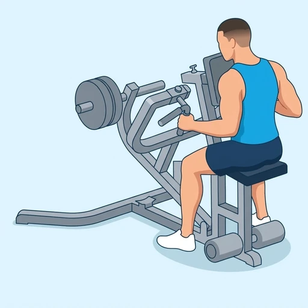
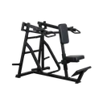

Chest-Supported Machine Row
A seated rowing machine exercise with a chest pad that supports the torso, so the lats and the muscles between the shoulder blades do the pulling and the lower back stays out of it. You pull the handles back by driving the elbows behind you, then let them return forward with control.
Back · Seated Row Machine · Beginner


Muscles worked by the Chest-Supported Machine Row
Primary
Secondary
Also called: lats, lat, latissimus dorsi, latissimus, back wings, rhomboid.
Equipment

Seated Row MachineAlso called: chest supported row, chest-supported row, low row, mid row, high row, iso-lateral row.
How to do the Chest-Supported Machine Row
- Adjust the seat so the handles sit at lower-chest height, then sit with your chest against the pad and your feet planted.
- Reach forward and take the handles with your arms extended and your shoulders relaxed.
- Brace your trunk, then pull the handles back by driving your elbows behind you.
- Squeeze your shoulder blades together at the end of the pull without lifting your chest off the pad.
- Pause briefly, then extend your arms to return the handles forward under control.
- Repeat for the planned repetitions, keeping your chest on the pad throughout.
Form tips
- Pull with the elbows rather than the hands, so the lats and mid-back lead and the biceps assist.
- Keep the chest on the pad and the shoulders down; shrugging or leaning back turns the row into an upper trapezius pull.
- Let the shoulder blades spread forward at the start of each repetition to get a full stretch before the next pull.
At a glance
| Body part | Back |
|---|---|
| Category | Strength |
| Force type | Pull |
| Mechanic | Compound |
| Difficulty | Beginner |
| Equipment | Seated Row Machine |
| Goals | Hypertrophy, Strength |
| Tags | Pull day, Lower back safe, Knee safe, No axial load, Shoulder safe |
| MET | 6.0 (metabolic equivalent, for calorie estimates) |
| Unilateral | No |
| Bodyweight | No |
| Dataset id | chest-supported-machine-row |
Chest-Supported Machine Row in German & Spanish
| German | Brustgestütztes Maschinenrudern |
|---|---|
| Spanish | Remo en Máquina con Apoyo en el Pecho |
Descriptions, instructions and tips ship in all three languages in the JSON.
Related exercises
Exercise data (JSON)
The record below is exactly what exercises.json ships for this exercise — names, descriptions, instructions and tips in English, German and Spanish.
{
"id": "chest-supported-machine-row",
"name_en": "Chest-Supported Machine Row",
"name_de": "Brustgestütztes Maschinenrudern",
"name_es": "Remo en Máquina con Apoyo en el Pecho",
"description_en": "A seated rowing machine exercise with a chest pad that supports the torso, so the lats and the muscles between the shoulder blades do the pulling and the lower back stays out of it. You pull the handles back by driving the elbows behind you, then let them return forward with control.",
"description_de": "Eine Rudermaschine im Sitzen mit einem Brustpolster, das den Oberkörper stützt, sodass Latissimus und die Muskeln zwischen den Schulterblättern das Ziehen übernehmen und der untere Rücken außen vor bleibt. Du ziehst die Griffe nach hinten, indem du die Ellbogen hinter dich treibst, und lässt sie dann kontrolliert nach vorn zurückkehren.",
"description_es": "Un ejercicio de remo sentado en máquina con una almohadilla en el pecho que sostiene el torso, de modo que los dorsales y los músculos entre los omóplatos hacen el tirón y la zona lumbar queda fuera. Tiras de las empuñaduras hacia atrás llevando los codos detrás de ti y luego las dejas volver hacia delante con control.",
"category": "strength",
"force_type": "pull",
"mechanic": "compound",
"difficulty": "beginner",
"equipment": "seated_row_machine",
"body_part": "back",
"primary_muscles": [
"latissimus_dorsi",
"rhomboids"
],
"secondary_muscles": [
"biceps_brachii",
"posterior_deltoid",
"trapezius"
],
"goals": [
"hypertrophy",
"strength"
],
"tags": [
"pull_day",
"lower_back_safe",
"knee_safe",
"no_axial_load",
"shoulder_safe"
],
"variation_group": "row",
"is_unilateral": false,
"is_bodyweight": false,
"instructions_en": [
"Adjust the seat so the handles sit at lower-chest height, then sit with your chest against the pad and your feet planted.",
"Reach forward and take the handles with your arms extended and your shoulders relaxed.",
"Brace your trunk, then pull the handles back by driving your elbows behind you.",
"Squeeze your shoulder blades together at the end of the pull without lifting your chest off the pad.",
"Pause briefly, then extend your arms to return the handles forward under control.",
"Repeat for the planned repetitions, keeping your chest on the pad throughout."
],
"instructions_de": [
"Stelle den Sitz so ein, dass die Griffe auf Höhe der unteren Brust sind, und setze dich mit der Brust am Polster und fest aufgestellten Füßen.",
"Greife nach vorn und nimm die Griffe mit gestreckten Armen und entspannten Schultern.",
"Spanne den Rumpf an und ziehe die Griffe nach hinten, indem du die Ellbogen hinter dich treibst.",
"Drücke die Schulterblätter am Ende des Zuges zusammen, ohne die Brust vom Polster zu lösen.",
"Halte kurz inne und strecke dann die Arme, um die Griffe kontrolliert nach vorn zurückzuführen.",
"Wiederhole für die geplante Anzahl an Wiederholungen und halte die Brust dabei die ganze Zeit am Polster."
],
"instructions_es": [
"Ajusta el asiento para que las empuñaduras queden a la altura de la parte baja del pecho y siéntate con el pecho contra la almohadilla y los pies bien apoyados.",
"Estírate hacia delante y agarra las empuñaduras con los brazos extendidos y los hombros relajados.",
"Aprieta el tronco y tira de las empuñaduras hacia atrás llevando los codos detrás de ti.",
"Junta los omóplatos al final del tirón sin despegar el pecho de la almohadilla.",
"Haz una breve pausa y luego extiende los brazos para devolver las empuñaduras hacia delante de forma controlada.",
"Repite el número de repeticiones previsto manteniendo el pecho sobre la almohadilla en todo momento."
],
"tips_en": [
"Pull with the elbows rather than the hands, so the lats and mid-back lead and the biceps assist.",
"Keep the chest on the pad and the shoulders down; shrugging or leaning back turns the row into an upper trapezius pull.",
"Let the shoulder blades spread forward at the start of each repetition to get a full stretch before the next pull."
],
"tips_de": [
"Ziehe mit den Ellbogen statt mit den Händen, damit Latissimus und mittlerer Rücken führen und der Bizeps unterstützt.",
"Halte die Brust am Polster und die Schultern unten; Schulterzucken oder Zurücklehnen macht aus dem Rudern einen Zug des oberen Trapezmuskels.",
"Lass die Schulterblätter zu Beginn jeder Wiederholung nach vorn auseinandergleiten, um vor dem nächsten Zug eine volle Dehnung zu bekommen."
],
"tips_es": [
"Tira con los codos en lugar de con las manos, para que los dorsales y la espalda media lleven el movimiento y los bíceps ayuden.",
"Mantén el pecho en la almohadilla y los hombros bajos; si encoges los hombros o te echas hacia atrás, el remo se convierte en un tirón del trapecio superior.",
"Deja que los omóplatos se separen hacia delante al inicio de cada repetición para lograr un estiramiento completo antes del siguiente tirón."
],
"met": 6.0,
"images": {
"flat": {
"start": "images/flat/chest-supported-machine-row-start.webp",
"peak": "images/flat/chest-supported-machine-row-peak.webp"
}
}
}Fetch just this exercise
const { exercises } = await fetch(
"https://exercise-dataset.com/exercises.json"
).then(r => r.json());
const ex = exercises.find(e => e.id === "chest-supported-machine-row");Free for personal and commercial in-app use with attribution (“Exercise data by RepDB”) — see the license and ready-made attribution snippets. Redistributing the data as a dataset or API is not permitted.